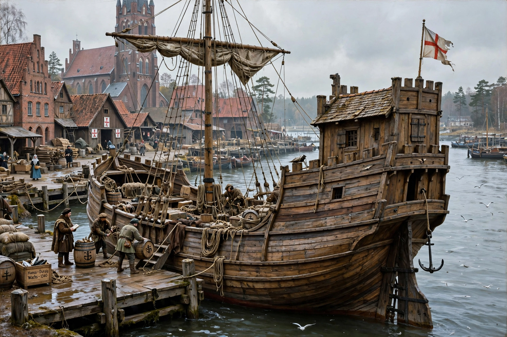

| Hanseatic League | |
 A Hanseatic cog, the league's characteristic trading ship | |
| Capital / centre | Lübeck (unofficial) |
|---|---|
| Active | 13th–17th centuries |
| Member cities | Up to ~200 at its height |
| Official language | Middle Low German |
| Key offices (Kontore) | Novgorod, Bergen, London, Bruges |
The Hanseatic League (from Middle Low German Hanse, "group" or "association") was a commercial and defensive confederation of merchant guilds and market towns in northern Europe. Growing from a few North German towns in the late 12th century, the league came to dominate trade along the coasts of the Baltic and North Seas for some three centuries, with trading posts (Kontore) from Novgorod in the east to London in the west.
The league's origins lie in agreements between travelling merchant associations and the towns they founded. Lübeck, founded in 1143 and refounded by Henry the Lion in 1159, became the league's leading city; the 1241 alliance between Lübeck and Hamburg is often taken as a founding moment. The first general diet (Hansetag) met at Lübeck in 1356.
At its height the league could field armies and fleets: it defeated Denmark in the war of 1367–1370, and the Treaty of Stralsund (1370) gave the Hanse extraordinary privileges, including a say in the Danish succession. In England its merchants traded from the Steelyard in London.
The league had no constitution, treasury, or permanent officials. Decisions were taken at irregular diets, dominated by Lübeck, and member cities ranged from great ports such as Hamburg, Bremen, and Danzig (Gdańsk) to small inland towns. Its foreign Kontore — the Peterhof in Novgorod, the Bryggen in Bergen, the Steelyard in London, and the office in Bruges — were self-governing merchant enclaves.
Hanseatic ships — chiefly the broad-beamed cog — carried grain, timber, furs, wax, and amber from the east; fish (especially herring and Bergen stockfish) from Scandinavia; and cloth, salt, wine, and metal goods from the west. The league's merchants enjoyed legal privileges that let them undercut local competitors, which periodically provoked conflict.
From the 15th century the league declined as territorial states grew stronger, Dutch and English merchants expanded, and the herring shoals shifted. The last diet met in 1669; only Lübeck, Hamburg, and Bremen retained the title "Hanseatic city" into the modern era.